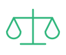

Étape 8 sur 9
Rééquilibrer les données

Tu donnes plus de poids aux exemples de candidates retenues, pour que l'IA les apprenne aussi bien que les autres. Résultat :
Les deux CV obtiennent le même score. La précision globale est de 87 %.
« On est à quelques jours de la date limite. À toi de décider. »
Lina, directrice des ressources humaines
Dernière décision avant la mise en service : tester ou non en conditions réelles ?